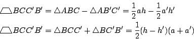

二、平行性與定量平面幾何基礎理論
（第 3 頁）
項武義
．作者任教於香港科技大學數學系
•對外搜尋關鍵字
|
二、平行性與定量平面幾何基礎理論
（第 3 頁）
項武義
|
．作者任教於香港科技大學數學系 •對外搜尋關鍵字 |
|
出入相補原理：
在中國的古算測量術中，其所用的基本工具就是上述勾股弦公式和下述出入相補原理。
如 [圖 2-7] 所示，在一個給定的矩形的對角線上任取一點 C'
，再過 C' 點作平行于兩邊的直線段（在實際測量中的水平線和垂線），則有：
[ 圖 2-7 ]
所以 [圖 2-7] 所示的兩個矩形面積相等，亦即
亦即相似直角三角形 若用現代定量平面幾何的知識來分析，上述矩形和直角三角形的面積公式，以及勾股弦和出入相補比例式其實業已構成一組完備的定量平面幾何基礎。它不但簡明扼要，而且用面積公式直截了當地一以貫之。這種處理方式易學好用，至今依然是定量平面幾何入門的捷徑。 再者，上述討論也啟示我們相似三角形定理本身應該也可以用中國古法，以簡簡單單的面積計算來加以証明：
【相似三角形定理】：設
証一：如 [圖 2-8] 所示，我們不妨設 A'=A, 。
[ 圖 2-8 ]
效法中國古法，我們用兩種辦法去計算梯形
的面積：

由兩式相減，即得 同理可得 也等于 和 。即 而兩個正數的平方相等時，其本身也相等，所以
証二：如 [圖 2-9] 所示，
和
是同底等高的，所以它們的面積相等。因此
和
的面積也相等。再者
[ 圖 2-9 ]
同理亦有
。因為
和
等面積，所以
這也就是我們所要証的相似比例式。 □
|
|
|
|
|
（若有指正、疑問……，可以在此 留言 或 寫信 給我們。） |
|
|
|
EpisteMath (c) 2000 中央研究院數學所、台大數學系 各網頁文章內容之著作權為原著作人所有 |
| 最後修改日期：6/19/2004 |